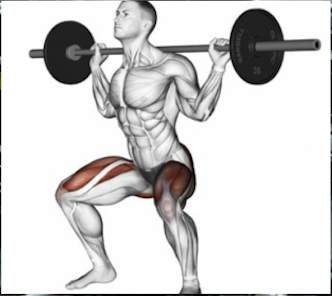
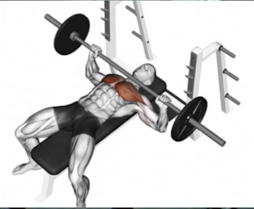
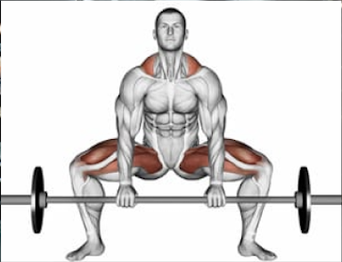

"Effektiv Træning til Studerende for Bedre Fokus og Velvære"
at træning til studerende er en afgørende faktor for både fysisk og mental sundhed. Regelmæssig motion kan hjælpe med at reducere stress, forbedre koncentration og øge energiniveauet, hvilket gør det lettere at klare hverdagens krav.
Her er de eneste 3 øvelser du har brug for, for at styrke din krop.
Squat styrker din core og ben. Bænkpres styrker dit bryst, skuldre og arme. Dødløft styker din ryg og ben


